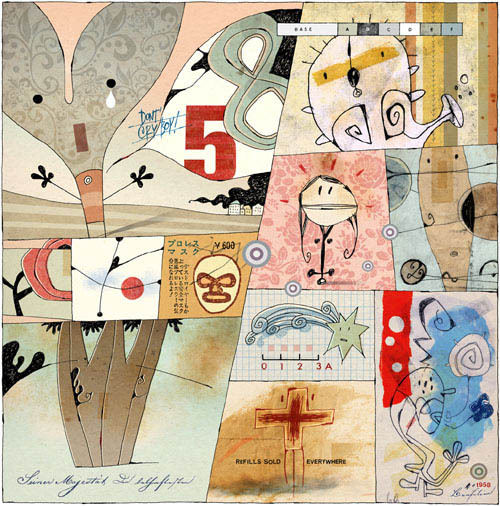
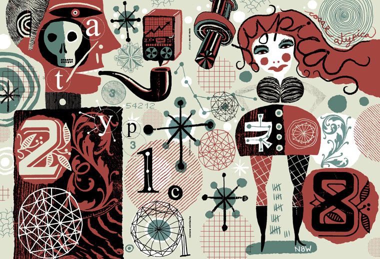
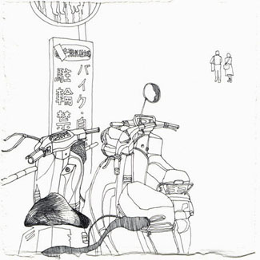
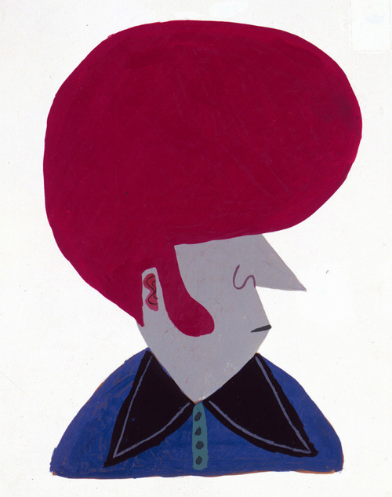
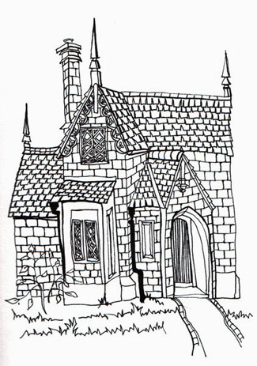
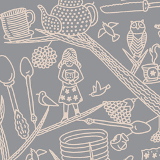

ДЕТАЛИ - 2
Любовь к трем апельсинам
Никто не мешает иллюстратору делать вещи симфонические, использовать одновременно орнамент (включая типографику) и осмысленную детализацию, достоверную анатомию и гротеск, реалистическую работу с освещением и все изобретения колористов за последние сто лет, наконец, эмоции и интеллект - а также гармонично сочетать разные материалы и техники. Другое дело, что примеров такого сочетания я, в общем, не встречал (но не теряю надеджы).
И само собой, существование всех этих возможных инструментов нисколько не умаляет достоинств тех, кто играет соло на каком-нибудь одном.
Нам известны авторы, способные из всех выразительных средств ограничиться только гротеском (с понятными оговорками; «нарративный элемент» я пока оставляю за скобками).
Andre Carrilho
— или только цветом
Walter Vasconcelos - пример довольно спорный, но красивенький

— или только орнаментом
опять Nate Williams

— или только деталями:
Опять Кози Чен, деваться некуда. Не серчайте, что я из раза в раз использую одни и те же имена - просто это очень чистые примеры. Чтобы вам не скучать, в следующий раз будет просто куча ссылок

— или вообще непонятно чем:
Calef Brown (герои Йоги прекрасные)

Вот предпоследний пункт про детали, пожалуй, наиболее распространен и довольно характерен для иллюстрации в ее нынешнем виде, сформированном не в последнюю очередь самоучками.
Удивительно (и отчасти обидно) то, что любовная - даже не тщательная - прорисовка деталей покупает с потрохами все остальное. Еще раз воспользуюсь сравнением иллюстрации с керлингом: здесь художнику удается заставить утюг попасть в цель не энергичной суетой, а ласковыми уговорами. Это как раз один из немногих способов выдать старание за мастерство. Я в Британской Школе проверял на студентах: чудесным образом работает.
Настя Ларкина

И все к чему: иллюстрация недели — это сайт фирмы Пантагрюэль от студии Decafe, построенный на графике Гали Панченко.

Конечно, большой вопрос, можно ли считать это иллюстрацией - и как раз его-то я хочу обсудить с соответствующими профессионалами. Тут анонс: один из следующих выпусков мы сделаем совместно с авторами колонки «кАк интерактивно», у которых я реаннексировал вторники, но с которыми нас связывает гораздо больше, чем просто соседство на kak.ru.
Посвящен выпуск будет, очевидно, использованию рисованной графики в веб-дизайне.